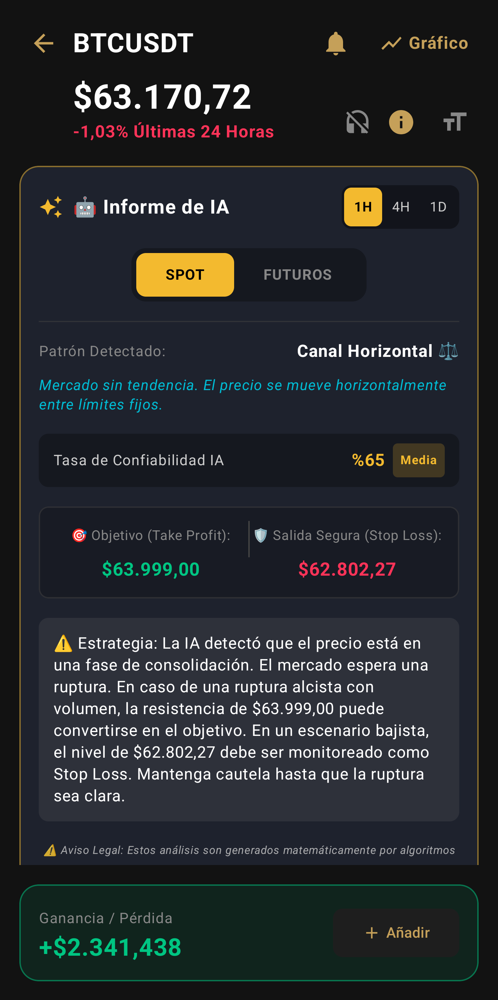

Radar IA Spot y Futuros Activo
No solo sigas las criptos,
Entiéndelas.
Utilice herramientas financieras premium de forma totalmente gratuita. Un rastreador de criptomonedas con inteligencia artificial de nueva generación, gráficos en vivo y terminal de gestión de cartera diseñado para inversores.

